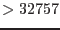
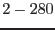

| Parameter | Mand | Type | Default | Constraints |
| eventset | yes | data-set | | |
EPIC PN raw events data-set
|
| outset | yes | data-set | events.dat | |
EPIC PN events data-set with calibrated and corrected PI channels
|
| reemissionthresh | no | integer | | none |
selection parameter: trigger threshold (in adu) for preceding events
|
| randomizeposition | no | boolean | Y | Y/N |
yes, if the computation of physical camera detector coordinates
is done with randomization (former parameter `randomize')
|
| randomizeenergy | no | boolean | Y | Y/N |
yes, if the raw amplitudes should be randomized within a pulse-height bin
|
| testenergywidth | no | boolean | Y | Y/N |
yes, if use non-standard energy bin width (i.e., 1 eV instead of previously
used 5 eV binning in output PI column
|
| gainctiaccuracy | no | integer | 2 | 0-2 |
Accuracy of gain/cti correction
|
| withphagaincolumn | no | boolean | N | Y/N |
Whether to create intermediate column PHA_GAIN.
|
| lowgainenergyscale | no | boolean | N | Y/N |
When switching on the energy correction for low-gain mode data
then most of the events will fall outside the 2-byte-limit for the
PI column (i.e. eV)
as the energy range is then about keV; if one is interested in this
full range the setting ``N" should be used and energy values be multiplied
later with 18.4 to obtain ``real" event energies. Only effective for the
few low-gain mode exposures, of course.
|
| patternanalysis | no | boolean | Y | Y/N |
no, if pattern recognition has been done already
(future development, not active yet)
|
| withphotonmap | no | boolean | N | Y/N |
yes, if diagnostic photon map file should be created
(see parameter photonmapset)
|
| photonmapset | no | data-set | photonmap.dat | |
name of optional output diagnostic photon map file, it will have
4 extensions corresponding to 4 user-definable energy bands
(see lothresh and hithresh)
|
| lothresh | no | real-list | 0 200 500 0 | |
lower band limits [eV] for parameter photonmapset
|
| hithresh | no | real-list | 200 500 2000 32000 | |
upper band limits [eV] for parameter photonmapset
|
| mappatterntype | no | string | sssn | |
pattern types for the events of the individual band maps
(future development, not fully active yet),
s = singles, d = doubles, t = triples,
q = quadruples, n = non-singles, r = recognized,
u = unrecognized, m = multiples (m = d+t+q), a = all,
x = doubles in x-direction, y = doubles in y-direction,
v = doubles in y-direction with main near CAMEX (i.e. split backward),
w = doubles in y-direction with main away from CAMEX (i.e. split forward)
|
| withoutoftime | no | boolean | N | Y/N |
yes, if ``out-of-time events'' file should be created instead of
``normal events'' file (only meaningful for IMAGING modes)
(considered as experimental)
|
| withctisrcpos | no | boolean | N | Y/N |
yes, if not the RAWY coordinates but the source position SRCPOS should be
used in the energry correction routines (only meaningful for IMAGING modes)
(considered as experimental).
See Sect.3.2.
|
| withctilongterm | no | boolean | Y | Y/N |
yes, if corrections for long-term CTI increase should be applied
|
| ctilongtermsoft | no | boolean | Y | Y/N |
yes, if special soft energy function should be included in the long-term
CTI corrections
|
| ctilongtermy | no | boolean | Y | Y/N |
yes, if special Y-dependence should be included in the long-term
CTI corrections
|
| withbackgroundgain | no | boolean | Y | Y/N |
yes, if background gain corrections should be applied
|
| withpatternoffset | no | boolean | Y | Y/N |
yes, if pattern energy offset corrections should be applied
|
| withccdoffsets | no | boolean | N | Y/N |
yes, if CCD offset corrections should be applied
(considered as experimental)
|
| withtempcorrection | no | boolean | Y | Y/N |
yes, if temperature-gain corrections should be applied
|
| checksasmip | no | boolean | N | Y/N |
yes, if the MIP rejection information obtained by task epframes
shall be printed (only meaningful if on-board rejection is switched off,
i.e. for SW, TI, BU modes).
|
| withrdpha | no | boolean | N | Y/N |
yes, if a correction for rate-dependent PHA effects for TI and BU modes
should be applied. The logical keyword PHA_RDCO indicates whether
this correction has been applied or not. If applied, then the keyword
PHA_RDCB gives the scaling factor B used in the correction,
derived from block RDPHA_DERIV in the CTI.CCF.
|
| rdphatimebinsize | no | boolean | 100 | |
time-bin size for rate-dependent PHA correction for TI and BU modes [s]
|
| withframecti | no | boolean | N | Y/N |
yes, if TIME-derived frame numbers should be used in CTI correction for
non-imaging modes (TI, BU) instead of the ODF frame numbers. For
FF, eFF, LW, SW modes internally always the TIME-derived frame numbers
instead of the dummy ODF numbers are used
(should not be changed).
|
| withgainburst | no | boolean | Y | Y/N |
apply special gain if BURST mode ?
|
| withgaintiming | no | boolean | Y | Y/N |
apply special gain if TIMING mode ?
|
| withgainff | no | boolean | N | Y/N |
apply special gain if FULL FRAME mode ?
|
| withgaineff | no | boolean | Y | Y/N |
apply special gain if EXTENDED FULL FRAME mode ?
|
| Parameter | Mand | Type | Default | Constraints |